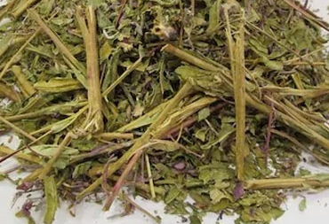

🌿 Kişi sağlamlığı baxımından yakı otu xüsusilə dəyərlidir.
Prostat və sidik yolları sağlamlığını dəstəklədiyi, prostat vəzinin funksiyasına müsbət təsir göstərdiyi bildirilir.
🌿 Yakı otunun prostata faydaları:
- Xroniki prostatit zamanı yaranan ağrı, diskomfort və təzyiq hissinin yüngülləşdirilməsində dəstəkçi rol oynaya bilər.
- Yakı otu iltihab əleyhinə xüsusiyyətlərə malikdir. Bu təsir prostat vəzisində yaranan iltihabın azalmasına kömək edə bilər.
- Prostat böyüməsi zamanı tez-tez sidiyə getmə, sidik axınının zəifləməsi və sidik kisəsinin tam boşalmaması kimi problemlər yaranır.
- Sidik yollarını rahatladır 🌿 sidik axınını yaxşılaşdıra bilər 🌿 gecə sidiyə qalxma hallarını azalda bilər
- Prostat böyüməsinə qarşı dəstək: Yakı otunun tərkibində olan flavonoidlər və bitki polifenolları prostat hüceyrələrinin sağlam fəaliyyətini dəstəkləyir. Bu maddələr prostat toxumasında hüceyrə balansının qorunmasına kömək edə bilər və xoşxassəli prostat böyüməsinin (BPH) irəliləməsini yavaşlada bilər.
🌸 Ümumi faydaları:
- Qadınlarda isə hormonal balansın qorunmasına və aybaşı dövründə yaranan narahatlıqların azalmasına yardımçı ola bilər.
- Yakı otu sinir sistemini sakitləşdirici təsiri ilə tanınır.
- Stress, əsəbilik, yuxusuzluq və psixoloji gərginlik zamanı rahatladıcı təsir göstərə bilər. Müntəzəm istifadə edildikdə yuxu keyfiyyətini yaxşılaşdırmağa və zehni yorğunluğu azaltmağa kömək edir.
🩺 Bu bitki həzm sisteminə faydalıdır:
- Mədə və bağırsaqlarda iltihabi proseslərin azalmasına yardımçı ola bilər, qastrit və mədə yanması kimi hallarda sakitləşdirici təsir göstərir
- Bağırsaq fəaliyyətini tənzimləməyə və şişkinliyin azalmasına kömək edə bilər.
- Yakı otu həm də iltihab əleyhinə və antioksidant xüsusiyyətlərə malikdir.
🩹 Antioksidant təsir:
- Güclü antioksidant təsiri sayəsində yakı otu: prostat hüceyrələrini oksidləşdirici zədələrdən qoruyur.
- Toxumaların vaxtından əvvəl zədələnməsinin qarşısını almağa kömək edir
❤️ Qan dövranına təsiri:
- Yaxşı qan dövranı prostat sağlamlığı üçün vacibdir.
- Yakı otu qan dövranını dəstəkləyərək prostat vəzinin daha yaxşı qidalanmasına və funksiyasının qorunmasına yardımçı ola bilər.
🌿 Yakı otu – istifadə qaydaları:
- ☕ Çay şəklində istifadə: Ən geniş yayılmış və təhlükəsiz istifadə formasıdır.
- 1 çay qaşığı qurudulmuş yakı otu. 1 stəkan (200 ml) qaynar su. Çay kimi 10–15 dəqiqə dəmlənir. Süzülərək içilir.
- Gündə 1–2 dəfə. Yeməkdən sonra içilməsi tövsiyə olunur. Axşam saatlarında içilə bilər (sakitləşdirici təsiri var).
- 2–3 həftəlik kurs şəklində istifadə edilir. 7–10 gün fasilə verildikdən sonra yenidən davam etmək olar.
- Qastrit və mədə yanması zamanı ilıq halda içilməsi məsləhətdir.
⚠️ Diqqət
- Hamilə qadınlar istifadədən əvvəl mütləq həkimlə məsləhətləşməlidir
- Uşaqlıq və yumurtalıq problemləri varsa, həkim nəzarəti vacibdir
- Yüksək dozada uzun müddət istifadədən çəkinmək lazımdır
 Instagram
Instagram